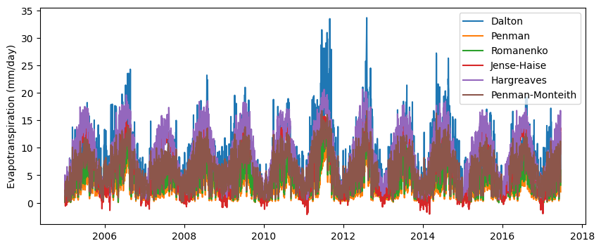
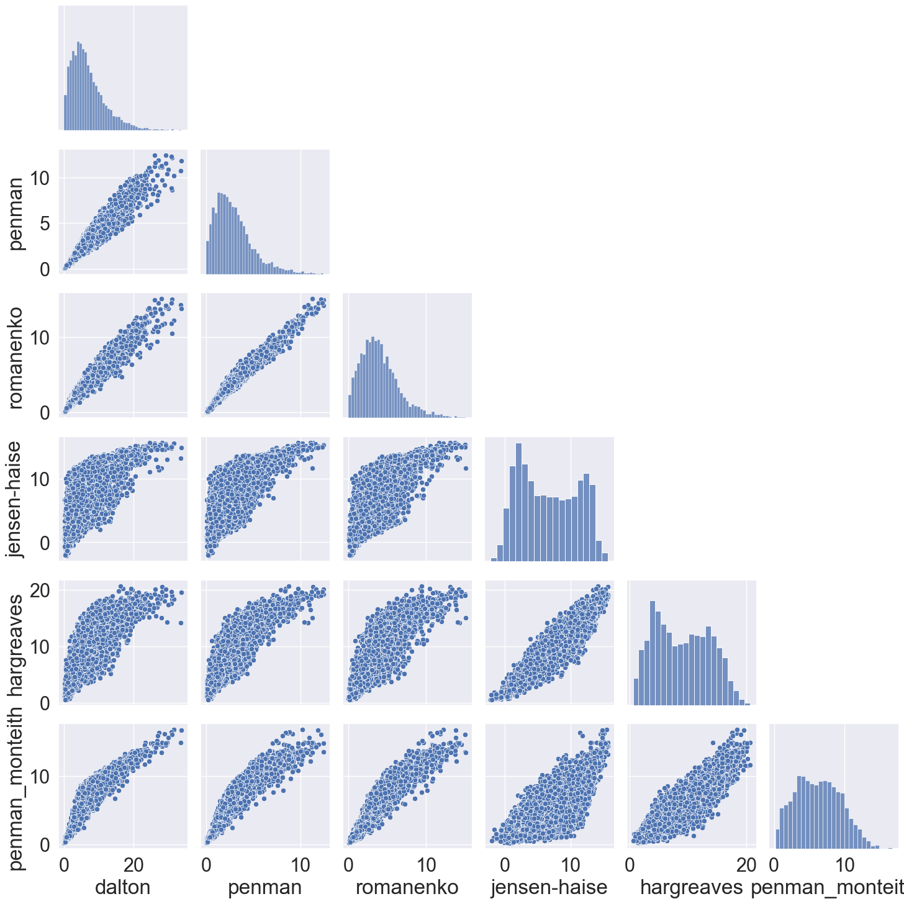

# Import modules
import pandas as pd
import numpy as np
import matplotlib.pyplot as plt
import seaborn as sns42 Reference evapotranspiration
Potential evapotranspiration (PET), reference evapotranspiration (ET₀), and actual evapotranspiration (AET) are key concepts to understand and qunatify the soil water balance in agriculture and hydrology. PET refers to the amount of water that would be lost through evapotranspiration if there were an unlimited water supply (e.g., a lake); it’s a theoretical maximum based on environmental conditions like temperature, humidity, wind speed, and solar radiation. ET₀ is a subset of PET, and represents a measure of evapotranspiration from a specific reference crop under well-watered conditions, and serves as a baseline for comparing water requirements across different crops and regions. In contrast, AET represents the real amount of water lost due to evapotranspiration from a specific crop or vegetation cover, which is largely modulated by soil moisture availability that can limit the evapotranspiration process. AET is often lower than PET and ET₀, especially in water-limited environments. These three metrics are relevant in water resource management, irrigation planning, and understanding plant-water relations across different climatic conditions.
Over the years, scientists developed several models to estimate PET and ET₀. Early models, like the Dalton and Penman models, only relied on vapor pressure deficit and wind speed based on mass-transfer principles. Later models, like the Jensen-Haise and Hargreaves models, accounted for energy balance components by considering extraterrestrial radiation solar radiation. More recent models, like the Penman-Monteith model, combine the principles of energy balance, aerodynamic resistance, and canopy resistance, offering a more accurate and reliable estimation of ET₀ across diverse climatic conditions. The Penman-Monteith is widely regarded as the standard method for ET₀.
This exercise is aimed at comparing several of these models using a dataset of weather observations.
Define auxiliary functions
THe following functions to compute the saturation vapor pressure and the extraterrestrial solar radiation appear in more than one model, so to avoid repeating code, we will define a function for each of them.
def compute_esat(T):
"""Function that computes saturation vapor pressure based Tetens formula"""
e_sat = 0.6108 * np.exp(17.27 * T/(T+237.3))
return e_sat
def compute_Ra(doy, latitude):
"""Function that computes extra-terrestrial solar radiation"""
dr = 1 + 0.033 * np.cos(2 * np.pi * doy/365) # Inverse relative distance Earth-Sun
phi = np.pi / 180 * latitude # Latitude in radians
d = 0.409 * np.sin((2 * np.pi * doy/365) - 1.39) # Solar delcination
omega = np.arccos(-np.tan(phi) * np.tan(d)) # Sunset hour angle
Gsc = 0.0820 # Solar constant
Ra = 24 * 60 / np.pi * Gsc * dr * (omega * np.sin(phi) * np.sin(d) + np.cos(phi) * np.cos(d) * np.sin(omega))
return RaDalton model
In 1802, John Dalton proposed a model for predicting open-water evaporation, considering wind speed and vapor pressure deficit. While effective for open water bodies, the model doesn’t account for plant and soil effects. This model is classified as a mass-transfer model, which describes water vapor moving along a gradient, which is maintained or enhanced by wind. This wind action replaces the moisture-saturated air near the evaporation surface with drier air, effectively sustaining the vapor gradient
E = u(e_{s} - e_{a})
u is the wind speed in m/s
e_s is the atmospheric saturation vapor pressure in kPa
e_a is the actual atmospheric vapor pressure
## John Dalton (1802)
def dalton(T_min,T_max,RH_min,RH_max,wind_speed):
"""Potential evaporation model proposed by Dalton in 1802"""
e_sat_min = compute_esat(T_min)
e_sat_max = compute_esat(T_max)
e_sat = (e_sat_min + e_sat_max)/2
e_atm = (e_sat_min*(RH_max/100) + e_sat_max*(RH_min/100))/ 2
PE = (3.648 + 0.7223*wind_speed)*(e_sat - e_atm)
return PEPenman model
## Penman (1948)
def penman(T_min,T_max,RH_min,RH_max,wind_speed):
"""Potential evapotranspiration model proposed by Penman in 1948"""
e_sat_min = compute_esat(T_min)
e_sat_max = compute_esat(T_max)
e_sat = (e_sat_min + e_sat_max)/2
e_atm = (e_sat_min*(RH_max/100) + e_sat_max*(RH_min/100))/ 2
PET = (2.625 + 0.000479/wind_speed)*(e_sat - e_atm)
return PETRomanenko model
## Romanenko (1961)
def romanenko(T_min,T_max,RH_min,RH_max):
"""Potential evaporation model proposed by Romanenko in 1961"""
T_avg = (T_min + T_max)/2
RH_avg = (RH_min + RH_max)/2
PET = 0.00006*(25 + T_avg)**2*(100 - RH_avg)
return PETJensen-Haise model
## Jensen-Haise (1963)
def jensen_haise(T_min,T_max,doy,latitude):
"""Potential evapotranspiration model proposed by Jensen in 1963"""
Ra = compute_Ra(doy, latitude)
T_avg = (T_min + T_max)/2
PET = 0.0102 * (T_avg+3) * Ra
return PETHargreaves model
PET = 0.0023 \ R_a \ (T_{avg} + 17.8) \ \sqrt{ (T_{max} - T_{min}) }
R_a is the extraterrestrial solar radiation (MJ/m^2)
T_{max} is the maximum daily air temperature
T_{min} is the minimum daily air temperature
T_{avg} is the average daily air temperature
## Hargreaves (1982)
def hargreaves(T_min,T_max,doy,latitude):
"""Potential evapotranspiration model proposed by Hargreaves in 1982"""
Ra = compute_Ra(doy, latitude)
T_avg = (T_min + T_max)/2
PET = 0.0023 * Ra * (T_avg + 17.8) * (T_max - T_min)**0.5
return PETPenman-Monteith model
def penman_monteith(T_min,T_max,RH_min,RH_max,solar_rad,wind_speed,doy,latitude,altitude):
T_avg = (T_min + T_max)/2
atm_pressure = 101.3 * ((293 - 0.0065 * altitude) / 293)**5.26 # Can be also obtained from weather station
Cp = 0.001013; # Approx. 0.001013 for average atmospheric conditions
epsilon = 0.622
Lambda = 2.45
gamma = (Cp * atm_pressure) / (epsilon * Lambda) # Approx. 0.000665
##### Wind speed
wind_height = 1.5 # Most common height in meters
wind_speed_2m = wind_speed * (4.87 / np.log((67.8 * wind_height) - 5.42)) # Eq. 47, FAO-56 wind height in [m]
##### Air humidity and vapor pressure
delta = 4098 * (0.6108 * np.exp(17.27 * T_avg / (T_avg + 237.3))) / (T_avg + 237.3)**2
e_temp_max = 0.6108 * np.exp(17.27 * T_max / (T_max + 237.3)) # Eq. 11, //FAO-56
e_temp_min = 0.6108 * np.exp(17.27 * T_min / (T_min + 237.3))
e_saturation = (e_temp_max + e_temp_min) / 2
e_actual = (e_temp_min * (RH_max / 100) + e_temp_max * (RH_min / 100)) / 2
##### Solar radiation
# Extra-terrestrial solar radiation
dr = 1 + 0.033 * np.cos(2 * np.pi * doy/365) # Eq. 23, FAO-56
phi = np.pi / 180 * latitude # Eq. 22, FAO-56
d = 0.409 * np.sin((2 * np.pi * doy/365) - 1.39)
omega = np.arccos(-np.tan(phi) * np.tan(d))
Gsc = 0.0820 # Approx. 0.0820
Ra = 24 * 60 / np.pi * Gsc * dr * (omega * np.sin(phi) * np.sin(d) + np.cos(phi) * np.cos(d) * np.sin(omega))
# Clear Sky Radiation: Rso (MJ/m2/day)
Rso = (0.75 + (2 * 10**-5) * altitude) * Ra # Eq. 37, FAO-56
# Rs/Rso = relative shortwave radiation (limited to <= 1.0)
alpha = 0.23 # 0.23 for hypothetical grass reference crop
Rns = (1 - alpha) * solar_rad # Eq. 38, FAO-56
sigma = 4.903 * 10**-9
maxTempK = T_max + 273.16
minTempK = T_min + 273.16
Rnl = sigma * (maxTempK**4 + minTempK**4) / 2 * (0.34 - 0.14 * np.sqrt(e_actual)) * (1.35 * (solar_rad / Rso) - 0.35) # Eq. 39, FAO-56
Rn = Rns - Rnl # Eq. 40, FAO-56
# Soil heat flux density
soil_heat_flux = 0 # Eq. 42, FAO-56 G = 0 for daily time steps [MJ/m2/day]
# ETo calculation
PET = (0.408 * delta * (solar_rad - soil_heat_flux) + gamma * (900 / (T_avg + 273)) * wind_speed_2m * (e_saturation - e_actual)) / (delta + gamma * (1 + 0.34 * wind_speed_2m))
return np.round(PET,2)Data
In this section we will use real data to test the different PET models.
# Import data
df = pd.read_csv('../datasets/acme_ok_daily.csv')
df['Date'] = pd.to_datetime(df['Date'], format='%m/%d/%y %H:%M')
df.head()| Date | DOY | TMAX | TMIN | RAIN | HMAX | HMIN | ATOT | W2AVG | ETgrass | |
|---|---|---|---|---|---|---|---|---|---|---|
| 0 | 2005-01-01 | 1 | 21.161111 | 14.272222 | 0.00 | 97.5 | 65.97 | 4.09 | 5.194592 | 1.976940 |
| 1 | 2005-01-02 | 2 | 21.261111 | 4.794444 | 0.00 | 99.3 | 77.37 | 4.11 | 3.428788 | 1.302427 |
| 2 | 2005-01-03 | 3 | 5.855556 | 3.477778 | 2.54 | 99.8 | 98.20 | 2.98 | 3.249973 | 0.349413 |
| 3 | 2005-01-04 | 4 | 4.644444 | 0.883333 | 7.62 | 99.6 | 98.50 | 1.21 | 3.527137 | 0.288802 |
| 4 | 2005-01-05 | 5 | 0.827778 | -9.172222 | 24.13 | 99.4 | 86.80 | 1.65 | NaN | 0.367956 |
latitude = 34
altitude = 350 # m
PET_dalton = dalton(df['TMIN'], df['TMAX'], df['HMIN'], df['HMAX'], df['W2AVG'])
PET_penman = penman(df['TMIN'], df['TMAX'], df['HMIN'], df['HMAX'], df['W2AVG'])
PET_romanenko = romanenko(df['TMIN'], df['TMAX'], df['HMIN'], df['HMAX'])
PET_jensen_haise = jensen_haise(df['TMIN'], df['TMAX'], df['DOY'], latitude)
PET_hargreaves = hargreaves(df['TMIN'], df['TMAX'], df['DOY'], latitude)
PET_penman_monteith = penman_monteith(df['TMIN'], df['TMAX'], df['HMIN'], df['HMAX'], df['ATOT'],df['W2AVG'],df['DOY'],latitude,altitude)# Plot models
plt.figure(figsize=(10,4))
plt.plot(df['Date'], PET_dalton, label='Dalton')
plt.plot(df['Date'], PET_penman, label='Penman')
plt.plot(df['Date'], PET_romanenko, label='Romanenko')
plt.plot(df['Date'], PET_jensen_haise, label='Jense-Haise')
plt.plot(df['Date'], PET_hargreaves, label='Hargreaves')
plt.plot(df['Date'], PET_penman_monteith, label='Penman-Monteith')
plt.ylabel('Evapotranspiration (mm/day)')
plt.legend()
plt.show()
# Compare all models
df_models = pd.DataFrame({'date':df['Date'],'dalton':PET_dalton, 'penman':PET_penman, 'romanenko':PET_romanenko,
'jensen-haise':PET_jensen_haise, 'hargreaves':PET_hargreaves,
'penman_monteith':PET_penman_monteith})# Compare all models using a pairplot figure
sns.pairplot(df_models, corner=True)
sns.set(font_scale=2)
Practice
Calculate the mean absolute difference of all models against the Penman-Monteith model. What are the parsimonious models that best agree with the Penman-Monteith model? In what situations you may consider some of the simpler models?
Using the Penman-Monteith model, what is the impact of wind speed? For instance, what is the impact on ETo when wind speed is increased by 1 m/s and maintaining all the other variables constant?
References
Dalton J (1802) Experimental essays on the constitution of mixed gases; on the force of steam of vapour from waters and other liquids in different temperatures, both in a Torricellian vacuum and in air on evaporation and on the expansion of gases by heat. Mem Manch Lit Philos Soc 5:535–602
Hargreaves G (1989) Preciseness of estimated potential evapotranspiration. J Irrig Drain Eng 115(6):1000–1007
Penman HC (1948) Natural evaporation from open water, bare soil and grass. Proc R Soc Lond Ser A 193:120–145
Thornthwaite, C.W., 1948. An approach toward a rational classification of climate. Geographical review, 38(1), pp.55-94.
McMahon, T.A., Finlayson, B.L. and Peel, M.C., 2016. Historical developments of models for estimating evaporation using standard meteorological data. Wiley Interdisciplinary Reviews: Water, 3(6), pp.788-818.